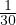
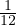

Minoan weights
Jordan Bell
March 4, 2017
Evans [3, p. 650], Heraklion Archaeological Museum:
Above the floor-level near the West end of the Fifteenth Magazine,
and evidently fallen from an area of the upper system near the
North-West Corner Entrance, was the remarkable stone weight
reproduced in Fig. 635.
It is 42 centimetres (16 inches) high, of the purple gypsum so much
in use in the last palatial Age, and is somewhat wedge-shaped above,
with a perforation 5-6 centimetres in diameter. It could thus be
suspended from a rope. Upon both of its sub-triangular faces is an
octopus in relief, the tentacles in each case coiling over its square-cut
sides.
inches) high, of the purple gypsum so much
in use in the last palatial Age, and is somewhat wedge-shaped above,
with a perforation 5-6 centimetres in diameter. It could thus be
suspended from a rope. Upon both of its sub-triangular faces is an
octopus in relief, the tentacles in each case coiling over its square-cut
sides.
Evans [3, p. 651]:
It is clearly a weight, and the tentacles coiling over the whole surface
had a practical value in making it difficult, without detection, to
reduce its volume.
Evans [3, pp. 651–652]:
The fact that it scales exactly 29,000 grammes shows that we have
here to do with a ‘light talent’ of a peculiarly Egyptian type.
This answers to a somewhat low version of the Babylonian talent
representing 60 minas of about 490 grammes. The Knossian weight
would itself answer to a mina of 483·33 grammes.
It further appears that the Palace Standard of which we have
here the evidence was approximately repeated in a series of copper
ingots. Nineteen of these were discovered by Professor Halbherr and
the Italian Mission in 1903, carefully walled up in four basement
compartments of the small Palace of Hagia Triada, five of them
presenting incised signs (Fig. 636). The average weight of these
ingots–which themselves do not greatly vary in weight–is 29,131·6
grammes, and two of them weigh exactly 29 kilogrammes, the
amount scaled by the Palace weight from Knossos.
Evans [3, p. 653]:
It is clear, indeed, that this form of ingot, with its sides incurved to
facilitate porterage, had a widespread currency in the Ancient World
beyond the sphere of Minoan enterprise. The large hoard of these
found at Serra Ilixi in Sardinia with inscribed signs had possibly a
Cretan connexion, and those found in Cyprus still come within the
Minoan range. But they are also seen borne as tribute by Syrians
and Nubians. The material of one of the Hagia Triada specimens
analysed by Professor Mosso was nearly 99 per cent. pure copper.
Evans [3, pp. 653–656]:
Numerous examples of smaller weights were discovered belonging to
the late palatial period. The typical shape was a disk, with sides
in some cases slightly rounded off, and the materials were steatite,
limestone, alabaster and, occasionally, lead. In many cases these were
engraved with circular signs of numeration, and it has thus been
possible to place together a consecutive series as shown in Fig. 638.
The larger of these, Fig. 638, a, of black steatite, found with a
late Palatial lamp of the same material, N.E. of the Palace, is
exceptionally marked with two larger circles, which, as the decimal
system was in vogue, may in each case stand for ten of the units,
represented here by four of the ordinary small circles [ ]. It would
therefore be equivalent to 24 units. The weight, as corrected to its
full original volume, scales 1,567·47 grammes. Its diameter is 11·5
cm. and height 6·5.
Divided by 24, this gives a unit of almost exactly 65·5 grammes
(c. 1,008 grains). The unit thus arrived at represents 5 Egyptian
gold units of c. 13 grammes (=65 grammes). This is 10 Egyptian  units of 6·5 grammes, the half being often used for calculation–the
drachm as opposed to the stater.
units of 6·5 grammes, the half being often used for calculation–the
drachm as opposed to the stater.
Next in gradation is the weight b, of the same black steatite material,
and also found in a late Palatial deposit. Five of the smaller circles
are here engraved [ ], representing similar 5 half units of 6·5 grammes.
The diameter of this weight is 8·2 cm., and its height 2·9.
The next weight c, of white limestone, found with the preceding,
presents 4 smaller engraved circles [ ], pointing to a unit of a little
over 68 grammes. This answers to 5 Egyptian units of the somewhat
full weight of 13·67 grammes. The diameter of this is 6·6 cm., and
height 3·1.
Finally, the small flat weight of coarse alabaster found above the
floor-level of the East Magazines has a single small ring on its upper
surface showing that it represents a unit. Its original weight was 5·92
grammes.
One flat disk of fine alabaster from the Palace site, marked with two
small circles, scaling 8·54 grammes, belongs to a different system,
and clearly answers to a light-weight Babylonian shekel, and a leaden
weight of the same shape, of 8·45 grammes, must be classed with
this. Otherwise, the correspondence of weights of this group, found
in a late palatial association–as evidenced by the numbers they
bear and the original amount scaled by them–with the Egyptian
gold units, may be regarded as conclusively established. This might
in itself be expected from the close commercial relations in which
Crete at this time stood to Egypt, so well illustrated in the tombs
of the Viziers of Thothmes III and his immediate successors by
the envoys of Keftiu and their offerings. A remarkable discovery,
however, described below, now shows that the Egyptian gold unit
was known in Crete by the very beginning of the Middle Minoan
Age.
Amongst other forms of Minoan weights may be mentioned a bronze
ox-head–found in a Late Minoan association of the votive stratum
of the Diktaean Cave–weighing 73·62 grammes (1,136·5 grains),
Fig. 639, apparently representing 8 kedets of 9·2025 grammes. Like
an Egyptian example of the same form from Tell-el-Amarna, it is
filled with lead.
A haematite example of the well-known ‘sphendonoid’ class–like
sling bullets slightly cut away on the side to enable them to
stand–was found on a floor of a basement room on the South front
of the Palace. It lay beneath a wall of the Re-occupation Period
(Fig. 640), and its affinities must be sought in examples in the same
material from L. M. III tombs at Enkomi. It weighs 12·6 grammes
(195·5 grains), and apparently represents a somewhat low Egyptian
gold unit.
Evans [3, pp. 664–665]:
The true Minoan mediums of currency seem rather to have been bars
and rings of precious metal. The gold rings, of which a series was
found at Mycenae, answer approximately to a mean weight of about
8·7 grammes (135 grains), which looks like a slight reduction of the
Egyptian kedet system. That gold bars were in use is demonstrated
by a complete example found in a Cypro-Minoan tomb at Old
Salamis, weighing 72·12 grammes (1,113 grains) corresponding to 8
Egyptian kedets of 9·025 grammes (139·125 grains). A cut section,
representing a fraction of such a bar of pale gold or electrum (two
and a half kedets) was found at Mycenae (Fig. 653). Similar sections
of the silver bars of Saxon treasure hoards were known as skillings.
The Mycenae specimen is in fact a true ‘skilling’ or ‘shilling’.
That, however, the older standard in Crete was the Egyptian has
received fresh and striking confirmation from a quite recent find
made on or near the site of Knossos. This is a ‘weight-seal’ of solid
gold and scaling 12·25 grammes (189 grains), which brings it within
the normal limits of the Egyptian gold unit.
Chadwick [1, pp. xi–xii]:
This is perhaps the point at which to say something about the
Linear A script, for although it lies strictly outside the scope of this
book, some references have to be made to it. Between the eighteenth
and fifteenth centuries B.C. the Cretans employed an indigenous
script, which they used both for keeping accounts and for dedicatory
inscriptions. This was patently the source from which Linear B was
borrowed; indeed it is likely that the Greeks began by borrowing
Minoan scribes, who then adapted their script to represent the Greek
language. Thus we can understand much of the content of the Linear
A tablets; we know how the writing system works and we can assign
approximate values to most of the syllabic signs. But although we
know the meaning of a few words, it has so far proved impossible to
demonstrate convincingly what the underlying language is. Further
progress will depend largely on the discovery and publication of more
texts.
Chadwick [1, p. 4]:
At what date Greek reached the islands is unclear; Thucydides (1.4)
talks of Cretan supremacy in this area, and deduces archaeologically
the presence of Carians (i.e., the people whom he knew as the
inhabitants of south-western Anatolia) in the islands (1.8). Crete was
occupied down to the fifteenth century by people who did not speak
Greek, for we have their language in written form, and although we
cannot securely identify it, there is no doubt that it was not Greek.
This is the language of the clay tablets and other inscriptions in the
Linear A script, which has been found in many parts of Crete, and
in traces in the Aegean islands. The Cretans certainly established
themselves outside Crete: the islands of Keos (Kéa, off Attica),
Kythera (Kíthira, off Lakonia), Melos (Mílos), Rhodes and above
all Thera (Santoríni).
Chadwick [1, p. 50]:
The archaeological evidence for Minoan colonies in the Aegean
islands all dates to an earlier age, and there is no reason to suppose
that by the end of the fifteenth century any of them were still
controlled by Knossos. The replacement of Minoan by Mycenaean
imports, which is documented for several sites, of course proves only
that Greece replaced Crete as the dominant power in the Aegean
at this time, a fact also apparently witnessed by the contemporary
Egyptian monuments.
Chadwick [1, pp. 102–103]:
As explained in the Preface (p. xiv), the units of the metric systems,
for which there were doubtless words, are represented in the script
by special signs. In some cases we can guess what these words were,
but since they are never written out syllabically we have no way of
verifying these guesses. The way in which these signs are used differs
from that found in the Minoan Linear A script, since there smaller
amounts than whole units are described by a complicated system of
fractional signs. In Linear B the signs (in some cases clearly the same
signs) represent smaller units, which are of course specified fractions
of the major unit. But despite the difference of usage, it would not
be surprising to learn that the basic units were the same, and we
shall see a remarkable point of agreement later on.
The weights are relatively simple, though we have too little evidence
to complete the lower end of the scale. The largest weight, used
of things like bronze, is a sign representing a balance, transcribed
conventionally as l. The largest unit of weight in use in the classical
period was called talanton (Latin talentum, hence our talent), and
since this name too means a balance, there can be little doubt that
it was also the name of the Mycenaean unit. This is divided into 30
m, the classical talent into 60 minae; but since the Mycenaean sign
is plainly double we can safely call this a double-mina (dimnaion,
a word which remained in use as a monetary unit in Cyprus in
classical times). The word mna (Latinized mina) is Semitic, and the
sexagesimal system, based on 60 parts to a unit, is also clearly of
Near Eastern origin.
The double-mina was then divided into quarters (n), and this in
turn probably into twelfths (p); the doubt is due to the fact that we
find p 12 and p 20, but these are perhaps not reduced to the higher
unit (as we often quote a weight in pounds, and not as so many
hundredweight, quarters, etc.). There is at least one smaller weight,
used to give quantites of saffron, which cannot be certainly fitted to
the system. The smaller weights are also used for gold. The smaller
weights of the classical system do not appear to match: the drachma
is one hundredth of the mina, the obol one sixth of the drachma.
� talent. � double-mina. � quarter. � =�. � = �.
�.
Chadwick [1, pp. 103–104]:
Evans found at Knossos a number of weights, the largest of which
is a block of gypsum with octopus decoration. It has been disputed
whether this is really a weight; if it is, its weight, quoted by Evans
at 29 kg, must be a talent. The more certain examples are flattish
cylinders, sometimes with markings on the top. A large one is marked
with two large circles flanked on each side by two small ones, and
Evans plausibly suggested that this was a notation for 24 units. This
gave a unit of approximately 65.5 g, and other weights could then be
shown to fit this: one with what is probably meant to be five circles
weighs 327.02 g (65 × 5 = 327.5), and another weighing 68 g is not
far from the supposed unit.
J. L. Caskey (1970) in his most instructive dig on Keos (or Kéa)
in the Cyclades found, again in a Minoan context, a number of lead
weights. These too appear to fit the Knossos unit: one with two dots
weighs 121.3 g (if its original weight was 131 g this would represent
two units), another with eight dots weighs 517 g (8 × 65.5 = 524),
and there is an unmarked example weighing 648.5 g, or close to ten
times the unit.
Chadwick [1, p. 105]:
It is hard to resist the conclusion that the 65.5 g unit is only one
of a number of competing systems current in the Minoan world,
and it may not have been the one selected by the Mycenaeans as
their standard. As the difference between Linear A and Linear B
in the method of expressing weight shows, the units in the system
were probably rearranged, even if the basis remained constant, just
as when Britain introduced decimal coinage in 1972 the pound was
kept, but its relationship to the penny was changed.
BM 1897,0401.1394, Enkomi, hematite weight, Late Bronze Age, 1650 BC–1050
BC, 2.5 g. Crewe U.180.
BM 1897,0401.1395, Enkomi, hematite weight, “corresponding to three quarters
of an Egyptian qedet”, Late Bronze Age, 1650 BC–1050 BC, 6.63 g. Crewe
U.181.
BM 1897,0401.1396, Enkomi, hematite weight, Late Bronze Age, 1650 BC–1050
BC, 18.9 g. Crewe U.182.
BM 1897,0401.1397, Enkomi, hematite weight, “corresponding to two Egyptian
qedets”, Late Bronze Age, 1650 BC–1050 BC, 18.86 g. Crewe U.183.
BM 1897,0401.1398, Enkomi, hematite weight, Late Bronze Age, 1650 BC–1050
BC, 27.1 g. Crewe U.184.
BM 1897,0401.1399, Enkomi, hematite weight, “corresponding to three Egyptian
qedets”, Late Bronze Age, 1650 BC–1050 BC, 28.12 g. Crewe U.185.
BM 1897,0401.1400, Enkomi, hematite weight, “corresponding to five Egyptian
qedets”, Late Bronze Age, 1650 BC–1050 BC, 46.65 g. Crewe U.186.
BM 1897,0401.1401, Enkomi, hematite weight, Late Bronze Age, 1650 BC–1050
BC, 47.9 g. Crewe U.187.
BM 1897,0401.1402, Enkomi, hematite weight, “probably a subdivision of an
eastern Mediterranean qedet”, Late Bronze Age, 1650 BC–1050 BC, 3.3 g. Crewe
U.188.
BM 1897,0401.1564, Enkomi, hematite weight, Late Bronze Age, 1650 BC–1050
BC, 26.2 g. Crewe U.189.
BM 1897,0401.1565, Enkomi, hematite weight, Late Bronze Age, 1650 BC–1050
BC, 18.1 g. Crewe U.190.
BM 1897,0401.1566, Enkomi, hematite weight, Late Bronze Age, 1650 BC–1050
BC, 18 g. Crewe U.191.
BM 1897,0401.1567, Enkomi, hematite weight, Late Bronze Age, 1650 BC–1050
BC, 7.4 g. Crewe U.192.
BM 1897,0401.1568, Enkomi, hematite weight, “probably a subdivision of an
eastern Mediterranean qedet”, Late Bronze Age, 1650 BC–1050 BC, 4.36 g. Crewe
U.193.
BM 1897,0401.1569, Enkomi, hematite weight, “probably a subdivision of an
eastern Mediterranean qedet”, Late Bronze Age, 1650 BC–1050 BC, 2.23 g. Crewe
U.194.
BM 1897,0401.484, Enkomi, Tomb 92, hematite weight, Late Bronze Age, 1650
BC–1050 BC, 5.07 g. Crewe 92.31.
BM 1897,0401.485, Enkomi, Tomb 92, hematite weight, Late Bronze Age, 1650
BC–1050 BC, 6.62 g. Crewe 92.32.
BM 1897,0401.486, Enkomi, Tomb 92, hematite weight, Late Bronze Age, 1650
BC–1050 BC, 10.01 g. Crewe 92.33.
BM 1897,0401.487, Enkomi, Tomb 92, hematite weight, Late Bronze Age, 1650
BC–1050 BC, 10.14 g. Crewe 92.34.
BM 1897,0401.488, Enkomi, Tomb 92, hematite weight, Late Bronze Age, 1650
BC–1050 BC, 18.72 g. Crewe 92.35.
BM 1897,0401.368, Enkomi, Tomb 67, hematite weight, Late Bronze Age, 1650
BC–1050 BC, 1.96 g. Crewe 67.64.
BM 1897,0401.369, Enkomi, Tomb 67, hematite weight, Late Bronze Age, 1650
BC–1050 BC, 3.45 g. Crewe 67.65.
BM 1897,0401.370, Enkomi, Tomb 67, hematite weight, Late Bronze Age, 1650
BC–1050 BC, 5.18 g. Crewe 67.66.
BM 1897,0401.371, Enkomi, Tomb 67, hematite weight, Late Bronze Age, 1650
BC–1050 BC, 6.78 g. Crewe 67.67.
BM 1897,0401.372, Enkomi, Tomb 67, hematite weight, Late Bronze Age, 1650
BC–1050 BC, 10.15 g. Crewe 67.68.
BM 1897,0401.373, Enkomi, Tomb 67, hematite weight, Late Bronze Age, 1650
BC–1050 BC, 19.08 g. Crewe 67.69.
BM 1897,0401.1529, Enkomi, bronze scale pan, Late Cypriot III, 1200 BC–1050
BC. Crewe F.6.
BM 1897,0401.1530, Enkomi, bronze scale pan, Late Cypriot III, 1200 BC–1050
BC. Crewe F.7.
BM 1897,0401.1535, Enkomi, copper oxhide-shaped ingot, Late Cypriot III, 1200
BC–1050 BC, 36.92 kg. Crewe F.85.
Museum of Underwater Archaeology, Bodrum
Evans [2]
Petruso [5]
BM 1872,0315.45, Ialysus, 240 grains.
CAHII1, pp. 389–390:
Although money, in the sense of coinage, had not yet been developed,
the system of barter had been simplified by the adoption of
certain fixed and generally recognized media of exchange–gold, silver,
copper, and grain–in terms of which other trade goods could be
priced with a fair degree of accuracy and consistency. Values in
metal were usually expressed by weight, the units employed being
the deben, a weight of about 91 grammes, its tenth part, the kitĕ
(9·1 grammes), and a weight equal to  deben (7·6 grammes) which
modern scholars have agreed to call a ‘piece’. Since the last-named
appears to have been ‘a flat, round, piece of metal…possibly with
an inscription to indicate’ its ‘weight or the name of the issuing
authority’, it ‘was practically a coin’. The ratio of 2 : 1 for the values
of gold and silver seems to have remained fairly stable throughout
the New Kingdom, dipping momentarily to 1 : 1 at the beginning
of the reign of Amenophis II because of ‘the influx of large quantities
of gold as booty and tribute from Palestine and Syria, then recently
conquered’. Copper, with only
: 1 at the beginning
of the reign of Amenophis II because of ‘the influx of large quantities
of gold as booty and tribute from Palestine and Syria, then recently
conquered’. Copper, with only  the value of silver, is always
quoted by the deben, 2 deben of copper being generally equivalent
in value to 1 khar-sack (2 bushels), of corn which itself was used as
a form of currency. In the Eighteenth Dynasty 8 ‘pieces’ (
the value of silver, is always
quoted by the deben, 2 deben of copper being generally equivalent
in value to 1 khar-sack (2 bushels), of corn which itself was used as
a form of currency. In the Eighteenth Dynasty 8 ‘pieces’ (  deben)
of silver or their equivalent in other commodities would buy a bull
or a cow or the service of a female slave for four days; 6 ‘pieces’, a
heifer or 3 arouras (2 acres) of (poor) land; and 3
deben)
of silver or their equivalent in other commodities would buy a bull
or a cow or the service of a female slave for four days; 6 ‘pieces’, a
heifer or 3 arouras (2 acres) of (poor) land; and 3 ‘pieces’, a linen
garment (d3iw) of good quality. Later in the New Kingdom the same
garment was priced at 13
‘pieces’, a linen
garment (d3iw) of good quality. Later in the New Kingdom the same
garment was priced at 13 –20 deben of copper, a tunic at 5 deben of
copper, a calf at 30 deben, a prime bull at 130 deben, and so on.
–20 deben of copper, a tunic at 5 deben of
copper, a calf at 30 deben, a prime bull at 130 deben, and so on.
[?, p. 514]:
The uniformity of shapes and techniques in metal-working over a
wide area of the eastern Mediterranean suggests that the industry
was partly in the hands of itinerant craftsmen who travelled from
place to place by donkey caravan or by ship. The Bronze Age
ship which was wrecked among the Beş Adalar islands off Cape
Gelidonya in about 1200 B.C. was carrying not only a stock of
ingots of copper and tin, but also an assortment of tools, agricultural
implements and household utensils, which may have been part of
the stock-in-trade of itinerant tinkers. The weights they were using
were of the Egyptian qedet standard, which was probably current
throughout the Levant, since it was in use in Ugarit, Crete and
Cyprus, and on the Palestinian coast.
Glotz [4, pp. 191–192]:
No trade flourishes in ever so small a degree without a regular system
of weights and measures. From very early times the Mesopotamians
and the Egyptians had several which crossed the sea and were
adopted in the islands of the Ægean.
The “Babylonian” system, which was already in use among the
Egyptians of the XlIth Dynasty, is a sexagesimal system, having
as unit a light shekel weighing from 7·58 to 8·42 grams, or on an
average 8 grams ; its multiples are the mina of 60 shekels, and the
talent of 60 minas (about 28·8 kilograms). This system spread to
Crete. A magazine at Knossos contained a truncated pyramid of red
limestone over the faces of which twined the tentacles of an octopus
in relief. The weight of this object is 28·6 kilograms ; it is perhaps the
standard of the royal talent, and the reliefs marked on it may, like the
stamp on coins, be intended to prevent any fraudulent debasing. The
subdivisions of this talent certainly belong to a sexagesimal system,
that is to say, one which is both decimal and duodecimal. A marble
cylinder discovered at Siteia weighs 1,140 grams, one twentyfth of a
talent of 28·5 kilograms, and twelve dozen, or a “gross”, of shekels
of 7·916 grams. Certain geese of hæmatite or cornelian, a form of
weight well known on the banks of the Nile and in the East, weigh
167·18, 2·6, and 1·63 grams–a fact which seems to indicate a unit of
20 shekels with its sub-multiples of one sixtieth and one hundredth.
Mycenaean numbers, Ventris [6, p. 57]
The numbers 1 to 9: � � � � � � � � �
The numbers 10 to 90: � � � � � � � � �
The numbers 100 to 900: � � � � � � � � �
The number 1000: �
The system of fluid measures: � � � �
Some commodities: � � � � � � � �
Some people and animals: � � � �
Some livestock: � � � � � � � � � � � �
The system of weight measures: � � � � �
References
[1] John Chadwick, The Mycenaean world, Cambridge University Press,
1976.
[2] Arthur Evans, Minoan weights and mediums of currency, from Crete,
Mycenae and Cyprus, Corolla Numismatica. Numismatic Essays in Honour
of Barclay V. Head (G. F. Hill, ed.), Oxford University Press, 1906,
pp. 336–367.
[3] _________ , The Palace of Minos: a comparative account of the successive
stages of the early Cretan civilization as illustrated by the discoveries at
Knossos. Volume IV: Part 2, Macmillan and Co., London, 1935.
[4] Gustave Glotz, The Ægean Civilization, Kegan Paul, 2003.
[5] Karl M. Petruso, Marks on some Minoan balance weights and
their interpretation, Kadmos: Zeitschrift für vor- und frühgriechische
Epigraphik 17 (1978), no. 1, 26–42.
[6] Michael Ventris and John Chadwick, Documents in Mycenaean Greek:
Three Hundred Selected Tablets from Knossos, Pylos and Mycenae with
Commentary and Vocabulary, second ed., Cambridge University Press, 1973.